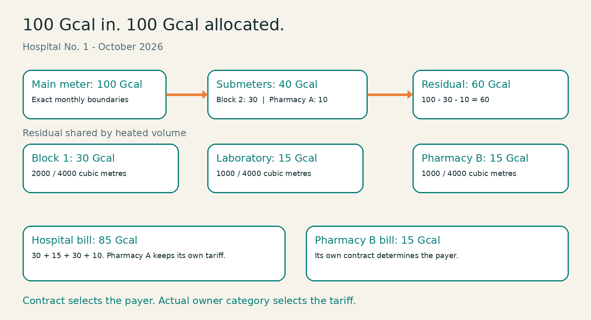

ODOO 19 · HEAT ENERGY SALES
From meter readings
to a balanced monthly bill.
Keep the physical energy balance intact while separating the actual consumer's tariff from the contractual payer.

Metering
Exact cumulative readings, controller assignments and chronological validation.
Billing
Volume allocation, tariff snapshots, guarded approval and one linked draft accounting invoice.
Consumer access
Private portal, downloadable PDF bills and monthly consumption analytics.
A complete monthly workflow
Draft → Calculated → Approved → Issued. Eligible documents may be cancelled and reset before accounting issuance.
Built for review
Eight persistent models, a batch wizard, isolated company data, English/Ukrainian interface and business, HTTP and accounting tests. Demo data reproduces the hospital example and every workflow state.
Deliberate limits
No estimated readings, mid-month meter replacements, network loss modelling, automatic invoice posting, payments or debt collection.